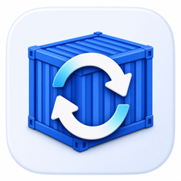

SCAN SCOPE
选择包含 Compose 项目的目录，并排除无需检查的子目录。
0–5；0 仅检查扫描目录本身。
UPDATE POLICY
控制检查时间、版本选择和启动行为。
五段式 Cron，例如每天 04:00：0 4 * * *
REGISTRY
查询会跟随镜像地址访问 Docker Hub、GHCR 或 Compose 中配置的其他仓库。
支持 http、https、socks5、socks5h。此代理用于程序查询 Registry；Docker 拉取仍使用 Docker 守护进程的代理配置。
NOTIFICATIONS
更新成功和任何中间错误都会发送通知。
尚未配置密钥
环境变量存在时优先使用环境变量。